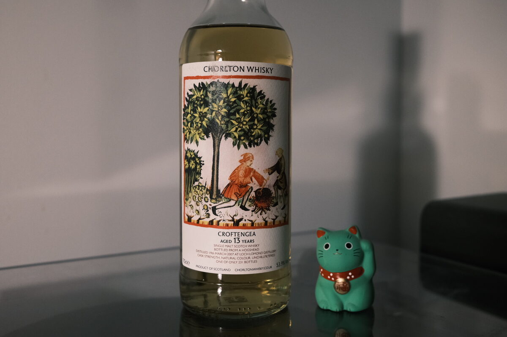

Croftengea (Loch Lomond) 2007 Chorlton 13 years 53.9% (hogshead)
Croftengea is one of Loch Lomond’s many spirit profiles. Heavily peated. This one, not so much. Tasted virtually with David Bennett (Chorlton) and the Whisky and Alement team. First cab off the rank.
Whisky and Alement is a whisky bar in Melbourne. My favourite bar, and has been for five years now. I just wish they’d do a T-shirt…
First bit of Chorlton trivia. The labels for this series feature medieval art about how to live a healthy life. Apt in the middle of a pandemic.
Colour Light straw.
Nose Kouign amman. Vanilla crème pâtissière. Blueberry yoghurt – fruity and a little lactic. A little herbal and woody – rosemary bushes. Hot chocolate with a twist of cloves and mint. Mint slices – minty and rosemary oil. Fresh, creamy. Lemon peel oil. After some time and water, a whack of pears.
Palate Herbaceous, grassy. Milky texture, bordering on creamy. Malt forward. Sweet caramel milk: Caramello Koalas. Lightly peated? To be honest, it seems unpeated. Spicy and a little hot. David Bennett mentions banana milkshakes and a bit of peat in the background. It’s very light to me, more of a roasty, chocolatey note. With time, the herbaceous, grassy notes intensify. Light citrus, quite floral.
Finish Very refreshing – almost like a peppermint. Aperitif? Caramel milk again! Spicy and quite warming. Herbaceous finish with a hint of smoke. Almonds. Long. A lovely citrus peel oiliness and slight – and very lovely – bitterness persists.
Comments Fresh, a certain aperitif quality as David emphasises. Odd Croftengea, if you told me it was unpeated I would believe you. Which is surprising for a heavily peated malt. Complete oddity. 88/100.

Posted by Dominic on 05 May 2021